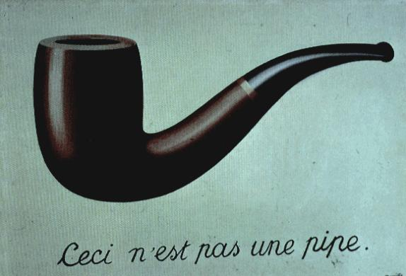

The Twentieth Century logician Bertrand Russell introduced a curious paradox: This statement is false. The statement can't be true, because it claims the converse. However, if it is not true, then it's false, just as it says. That makes it true. Paradoxically, it seems to be neither true nor false, or perhaps both true and false.
 The famous Belgian artist René Magritte rendered the idea of Russell's Paradox visually in his famous painting Ceci n'est pas une pipe. The title translates from French, This Is Not A Pipe. The painting shows a pipe with the text Ceci n'est pas une pipe below it. Superficially, the painting looks like a true statement, since it is a picture of the pipe, not an actual pipe. However, the assertion is also part of the picture, which seems to make it false, because it is clearly a painting of a pipe. Paradoxically, the truth seems to depend on whether the statement is an assertion about the painting or a part of it. But, it's both.